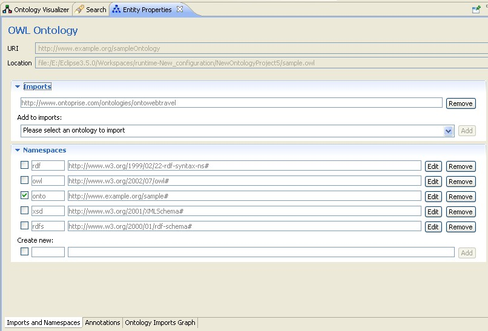

This Entity Properties panel displays general properties of an OWL ontology itself. Once you have selected an ontology in the Ontology Navigator, the Entity Properties panel will show import and namespace information of the currently selected ontology.

Imports
In the Imports section, ontologies imported by the currently selected ontology are shown. Importing another ontology brings the entire set of classes, properties, and individuals provided by that ontology into the current ontology. Importing another ontology will also import all of the ontologies that the initial ontology imports.
Namespaces
Usually, each imported ontology is coordinated with a namespace declaration. The namespace declaration provides convenient means to reference names defined in other OWL ontologies. A namespace is a string of characters that prefixes the identifiers of classes, properties, and individuals in an ontology. By maintaining different namespaces for different ontologies it is possible for one ontology to reference resources in another ontology in an unambiguous manner.
In addition, every ontology can specify a default namespace, stating that unprefixed names refer to this namespace. You can specify the default namespace by selecting the check box in front of the namespace. Newly generated resources will then get this namespace by default.